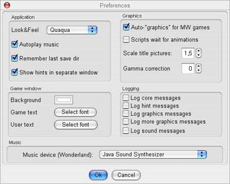

In the file menu finds the Preferences item which opens the options dialog:

From this dialog you can change the following options:
| Application | |
| Look & Feel | Changes the design of JMagnetic. Note: For the new look and feel to take effect you need to restart the interpreter. |
| Autoplay music | JMagnetic tries to open an appropriate MP3 file for the selected game and starts playback automatically |
| Remember last save dir | The last directory used for saving a game is remembered and preselected for the next save/load action. The directory is stored for each game individually. |
| Show hints in separate window | Opens the hints from Magnetic Windows games in a separate window in browseable tree view. If disabled hints are accessed in text mode within the game window. |
| Game window | |
| Background | Changes the background colour of the game window. |
| Game text | Changes font, style and colour of the game output |
| User text | Changes font, style and colour of the user input as it appears in the game window |
| Graphics | |
| Auto-graphics for MW games | By default graphics are disabled in Magnetic Windows games. If the option is selected, the interpreter automatically enables graphics when detecting a Magnetic Windows game |
| Scripts wait for animations | When running a script with Magnetic Windows games, the playback of the script waits until an running animation is finished |
| Scale title pictures | Factor for automatic resizing of the title screens |
| Gamma correction | Factor for gamma correction when displaying game images |
Logging |
|
| Log core messages | For debugging and testing purposes. Writes interpreter core related log messages to the targets that are defined in the log4j.xml configuration file. Note: The performance of the the interpreter will highly degrade and the log files grow fast, so use this option with care. |
| Log hint messages | For debugging and testing purposes. Writes game hints related log messages to the targets that are defined in the log4j.xml configuration file. Note: The performance of the the interpreter will slightly degrade and the log files grow steadily, so use this option with care. |
| Log graphics messages | For debugging and testing purposes. Writes game graphics related log messages to the targets that are defined in the log4j.xml configuration file. Note: The performance of the the interpreter will degrade and the log files grow steadily, so use this option with care. |
| Log more graphics messages | For debugging and testing purposes. Writes more detailed game graphics related log messages to the targets that are defined in the log4j.xml configuration file. Note: The performance of the the interpreter will degrade and the log files grow steadily, so use this option with care. |
| Log sound messages | For debugging and testing purposes. Writes MIDI related log messages when playing the Wonderland music scores |
| Music | |
| Music device (Wonderland) | Sets the MIDI device that is used for playing the Wonderland music scores. Default is Java Sound Synthesizer. |